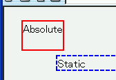
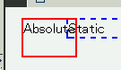

絶対配置（position: absolute;）・固定配置（position: fixed;）・フロートの後に置かれている通常配置要素の上マージンが無視されてしまう。
<div style="position:absolute; height:40px; border:2px solid red;">Absolute</div> <div style="margin: 50px; border:2px dashed blue;">Static</div>
絶対配置したdiv要素の高さが40px、後続するdiv要素の（上）マージンが50pxなので、2つのdiv要素は重ならずに表示されるはずです。
例示ソースをページ先頭（body開始タグ直後）に置いたときのものです。
Opera6.05での表示
Moz1.0.1での表示
N6.2.3/N7/Moz1.0.1では標準・互換モードともに不具合の発生が確認されました。